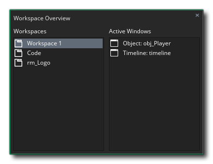
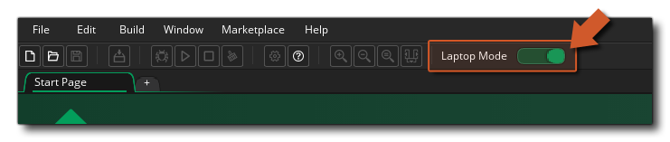

L' GameMaker Studio 2 accepte les saisies au clavier et au clavier, et de nombreuses opérations peuvent être effectuées en utilisant l'une ou l'autre ou les deux. En général, vous pouvez cliquer sur le bouton gauche de la souris  pour sélectionner quoi que ce soit, utilisez
pour sélectionner quoi que ce soit, utilisez  /
/  +
+  pour sélectionner plusieurs éléments, maintenez
pour sélectionner plusieurs éléments, maintenez  pour faire glisser des articles dans différents docks ou sur les espaces de travail, et aussi la
pour faire glisser des articles dans différents docks ou sur les espaces de travail, et aussi la  pour ouvrir des menus spécifiques au contexte. Notez que si vous utilisez GameMaker Studio 2 sur un système macOS et que vous utilisez une souris à un seul bouton, veuillez utiliser
pour ouvrir des menus spécifiques au contexte. Notez que si vous utilisez GameMaker Studio 2 sur un système macOS et que vous utilisez une souris à un seul bouton, veuillez utiliser  +
+  pour obtenir un clic droit de la souris
pour obtenir un clic droit de la souris  .
.
Il y a aussi un grand nombre de raccourcis clavier qui peuvent être utilisés pour naviguer dans les différents éléments d'espace de travail et les éditeurs de ressources, et bien que vous puissiez trouver une liste complète ici, nous passerons rapidement en revue les plus importants:
/
+ " Z ": Cela annulera l'action précédente et fonctionne dans la plupart des éditeurs.Vous avez plusieurs niveaux d'annulation aussi, vous pouvez donc appuyer plusieurs fois sur cette touche pour" annuler "les modifications.
: Cela ouvre la fenêtre Vue d'ensemble de l' espace de travail qui peut être utilisée pour naviguer rapidement entre les éléments ouverts dans les différents espaces de travail. 
: Ceci ouvrira le manuel. Notez que lorsque vous utilisez le code DnD™ ou GML, vous pouvez également sélectionner une action ou une fonction (ou un mot-clé ou autre), puis appuyez sur
pour ouvrir le manuel sur la page correspondante.
: Cela peut être utilisé pour réduire ou développer toutes les différentes fenêtres ancrées dans l'EDI.
Outre ces méthodes d'entrée, il existe également un support limité pour les périphériques de stylet, ainsi qu'un mode spécial pour les personnes travaillant sur des projets utilisant un ordinateur portable. Les deux sont expliqués ci-dessous:
Si vous utilisez GameMaker Studio 2 sur un ordinateur portable, vous aurez une autre option en haut de l'IDE pour le mode Portable: 
Ce sera par défaut, mais peut être désactivé si vous préférez en activant ce bouton. Le mode ordinateur portable se combine avec certains outils de l'EDI pour améliorer l'expérience lors de l'utilisation d'un pavé tactile, en simplifiant les 3 interactions principales de la souris: Panoramique, zoom et défilement. Il utilise deux touches de modification pour faire ceci: Gauche
. Lorsque le mode portable est activé, gauche
Une dernière chose que nous allons mentionner ici est que l'IDE pour GameMaker Studio 2 également un support minimal pour les écrans tactiles. Sur tous les systèmes d'exploitation, vous pouvez utiliser l'écran tactile pour cliquer et faire glisser des éléments dans l'espace de travail principal, et nous prenons en charge 2 pointeurs simultanés, où un second clic effectuera un clic droit. Notez que sous Windows 8 et GameMaker, l' GameMaker Studio 2 prend également en charge les périphériques à stylet.